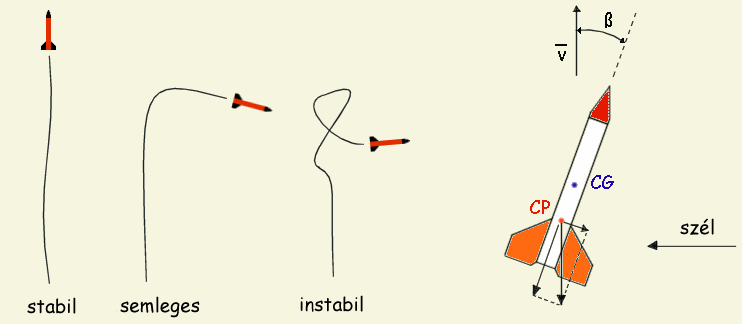
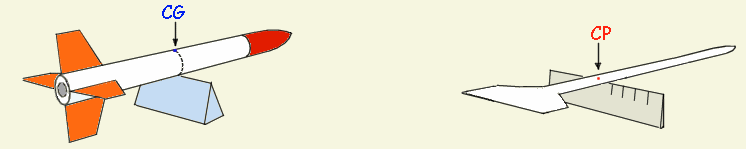
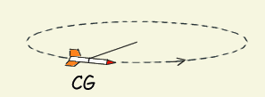
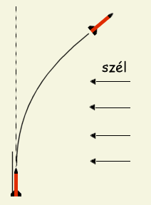
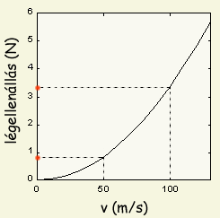
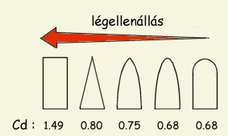

Repülés közben a rakétára a környező levegővel való kölcsönhatásból eredő különféle erők hatnak.
Természetesen ezen aerodinamikai erők befolyással vannak a rakéta röppályájára, sebességére, az elért magasságra stb.
Ebben a fejezetben az amatőr rakétázásban két legfontosabbnak tartott jelenségről lesz szó. Egyik a rakéta
stabilitása, a másik pedig a rakétát fékező légellenállás.
A stabilitás a rakéta (vagy bármely más repülő test) röppályán való viselkedését jellemzi. Alapvetően egy rakéta lehet aerodinmikailag stabilis, instabilis vagy semleges. Egy stabil rakéta követni fogja a kilövőállvány által megadott irányt és automatikusan korrigálja a nemkívánatos kitérést az eredeti röppályához képest. Egy instabil rakéta röppályája megjósolhatatlan, jellemző hogy repülés során többször is irányt változtat, teljesen önkényesen. Mozgása kaotikus, néha pörög, néha bukdácsol, előfordulhat hogy megfordul és visszaesik a fejünkre. Egy semleges rakéta a kilövőállványt elhagyva egy darabig még repülhet egyenesen, ám a legkisebb széllökés is könnyen kitérítheti pályájáról. A három esetet a következő rajz szemlélteti:
|  | 1. Ábra: Stabil, instabil és semleges rakéta viselkedése oldalirányú széllökés hatására |
Magától értődik hogy a stabil viselkedés kívánatos ahhoz, hogy a rakétánk jól repüljön. A stabilitást a rakéta tömegközéppontjának és nyomásközéppontjának egymáshoz viszonyított helyzetéből lehet meghatározni. A tömegközéppont (jele CG az angol "Center of Gravity"-ból) szószerint értendő, míg a nyomásközéppont (CP az angol "Center of Pressure"-ból) azt a pontot jelöli ahol a rakétára ható aerodinamikai erők eredője hat. Egy rakéta statikusan stabil, ha a CG a CP előtt helyezkedik el, függetlenül a rakéta alakjától. Az érthetőség kedvéért ez a helyzet a mellékelt ábrán van vázolva: a rakéta v sebességgel halad előre és egy széllökés ß támadási szöggel téríti el a megadott haladási irányhoz képest. A szél a nyomásközéppontban hat, mint minden más légelenállasból származó erő és a rakétát egyéb fix pont híján a tömegközéppontja körül próbálja elforgatni. Az elfordulás következtében a szárnyakra ható légellenállás megnő és ellenkező irányba fogja fordítani a rakétát, ismét csak a CG körül, azaz csökkenti a széllökés által okozott pályamódosulást. Egyszerűbben fogalmazva: mivel a CP a CG mögött van, bármely oldalirányból ható erő a rakéta végét kitolja de azt a légellenállás mepróbálja visszanyomni, hogy a szárnyak ismét párhuzamosak legyenek a haladási iránnyal.
Egy semleges stabilitású rakéta nem fog visszaállni az eredeti pályára, mivel a szárnyakon keletkező felhajtóerő a CG-ban hat (CP és a CG ugyanott vannak, igy nem keletkezhet forgatónyomaték). Még rosszab a helyzet egy instabil rakéta esetén, amely nemhogy korrigálná, de méginkább felerősíti az oldalirányú széllökés hatását (a szárnyakon keletkező felhajtóerő ugyanabba az irányba próbálja fordítani a rakétát mint a szél). Ha ez így elsőre nem egyértelmű, azonnal láthatóvá válik lerajzolva.
A CG helye nagyon könnyen megállapítható, a rakétát egyszerűen egy ceruzára vagy vonalzóra helyezve és addig tologatva míg egyensúlyba nem kerül. Természetesen ki is lehet számolni a CG helyét a tervrajz alapján, feltéve hogy ismerjük az alkotórészek (motor, törzs, szárnyak...) pontos tömegét. Fontos észben tartani, hogy a tömegközéppont helye változik ahogy az üzemanyag fogy, éspedig előbbre vándorol, lévén hogy az üzemanyag általában a rakéta hátsó részében van. Lényeges hogy a CP minden esetben a CG mögött maradjon, tehát ellenőrizni kell egy üres motorral is.
A CP helyének meghatározására különböző módszerek léteznek. Ezek közül a legkönnyebb egy számtógépes programot használni, mint pl. a RockSim, RocketCAD vagy Aerolab (lásd a rakétás szoftverek oldalon), kezdő amatőr rakétaépítőknek pedig még egyszerűbbnek tűnhet a kivágásos módszert használni. Ki is lehet számolni a Barrowman egyenlet alapján, de a módszert nem ismertetem itt, mivel a számítógépes programok általában ezt használják, fölösleges tehát papírral és ceruzával nekilátni.
A kivágásos módszer, amint azt a neve is mutatja, abból áll, hogy a rakéta sziluettjét egy kartonlapra rajzoljuk, majd egy ollóval szépen kivágjuk belőle. Az így kapott papírrakétát egy vonalzóra helyezve megállapítjuk a tömegközéppont helyét. Lemérjük ennek távolságát a rakéta csúcsától és rámérjük az igazira. Ez a pont lesz a rakéta CP-je. A módszer egyszerűsége ellenére elég pontosan meg lehet határozni a CP helyét. A kivágásos módszer azokkal az egyszerűsítő feltételekkel él, hogy az aerodinamikai erők támadási szöge 90 fok (a gravitációval szimuláltuk az oldalról ható erőket), és hogy ezen erők a rakéta teljes felületén egyenletesen eloszolva hatnak.
|  | 2. Ábra: CG és CP helyének meghatározása a gyakorlatban |
Felmerül a kérdés, hogy milyen távolságra legyen a CP a CG mögött. Amatőr körökben elterjedt az "egyátmérős stabilitás" azaz egy rakétaátmérőnyi távolság a CG és CP között, ami esetek többségében kielégítő stabilitást biztosít. Ezt legegyszerűbb úgy beállítani, hogy bejelöljük a CP-t a rakéta oldalán, majd addig növeljük a rakéta hegyének tömegét amíg a CG egy rakétaátmérővel a CP elé nem kerül. Létezik egy ún. statikus stabilitási intervallum is, amely 0.6....1,5 átmérőnyi távolságot jelent (változó átmérőjű rakéták esetén a maximális átmérőt kell alapul venni). Amatőr rakéták általában nagyobb tömeg/térfogat arányúak mint a modellrakéták, tehát kevésbé érzékenyek a széllökésekre, így ezeknél a helyes CG-CP távolság 1...2 rakétaátmérő. Lényeges hogy a CP és CG közti távolság ebbe az intervallumba essen: ha ennél kisebb, akkor a rakéta könnyen instabillá válhat, de az sem kívánatos hogy ennél nagyobb legyen, mert akkor túlzott "szélkakas effektus" léphet fel. Ez a jelenség mindenképp módosítja a rakéta pályáját, de nagymértékben akkor, ha a CG messze a CP előtt található.
|  |
| 3. Ábra: Dinamikus stabilitásteszt |
Miután meggyőződtünk arról, hogy rakétánk CG-je legalább egy rakétaátmérővel a CP előtt van, érdemes még a következő kis stabilitásvizsgáló tesztet elvégezni. Az indulásra kész rakétát (motor, ejtőernyő, és minden egyéb beletéve) egy kötéllel megkötjük a tömegközéppontjában (CG) és megforgatjuk a fejünk fölött. Ezáltal tulajdonképpen "valós" repülési körülményeket teremtünk és ezúton megfigyelhetjük hogyan viselkedik a rakéta dinamikus körülmények között. Amennyiben a rakéta dinamikusan stabil, az orrész mindig előre fog nézni, mint ahogy azt a mellékelt ábra is mutatja. Bármilyen más viselkedés (ha rakétánk oldalra, netán hátrafele állna be) instabil viselkedésre utal, nem szabad tehát elindítani a rakétát, hanem előbb ki kell rendesen egyensúlyozni. Megfigyelhetjük, hogy lassú forgatás esetén a rakéta nem áll be azonnal a kívánt irányba (azaz orral menetirányba), de amint gyorsítjuk a forgást, stabilan fel kell vegye a helyes irányt. Ez szépen igazolja a fentiekben már tárgyalt elméleti részt, miszerint kellően nagy sebesség esetén a szárnyak stabilizálnak, azaz a légellenállás oly módon "állítja be" a rakétát, hogy a szárnyak párhuzamosak legyenek a haladási iránnyal.
A stabilitással kapcsolatban két dolgot kell még megjegyeznem, amit érdemes lehet észben tartani:
|  |
| 4. Ábra: Szélkakas effektus |
a fentiekben tárgyalt stabilitás az ún. statikus stabilitás. Ez azt jelenti hogy a rakéta hátsó részének felületét megnövelve (szárnyak), valamint az orrészt súlyosbítva a CG-t a CP elé helyeztük (ugyanezen elv alapján használják a tüzijátékrakéták a pálcát, vagy farkat) és álló (statikus) helyzetben ellenőrizzük a stabilitást. A statikusan kiegyensúlyozott rakéta dinamikus stabilitását a 3. ábrán szemléltetett teszttel vizsgálhatjuk meg. Lehet azonban a rakétát másként is stabilizálni, pl. pörgéssel. Ez esetben nincs szükség szárnyakra és a rakéta statikusan instabil lesz, de dinamikusan stabil, mert a tengely körüli pörgés azzá teszi. Ez a gyakorlatban annyit tesz, hogy egy pörgésstabilizált rakéta nem megy át a statikus CG/CP-teszten, de a levegőben mégis stabilan fog viselkedni. A pörgést általában több, ferdén elhelyezett fúvóka adja, de asszimmetrikus szárnyakkal is elő lehet idézni. Ez a weboldal nem tárgyalja a pörgésstabilizált rakétákat, egyrészt mert nincs tapasztalatom e téren, másrészt mert a pörgetéses stabilizálás rakétamodelleknél nem alkalmazott módszer.
bár itt fixnek tekintettük, a CP helye is változik a sebesség és az aerodinamikai erők támadási szögének függvényében. Ez az elmozdulás jelentőssé válhat nagy sebességek esetén. Megnyugtatásul: rakétás körökben általánosan elfogadott tény, hogy az alacsony sebességeken stabil rakéták stabilan fognak viselkedni kb. a hangsebesség kétszereséig. Amatőr rakéták nemigen repülnek ennél gyorsabban, ha valaki mégis gyorsabb rakétát tervezne, annak valószínűleg úgysem ez az iromány a fő forrásanyaga.
Szélkakas effektus (weathercocking) alatt a szélnek a rakéta pályájára való hatását értjük, nevezetesen azt, hogy a rakéta "belerepül a szélbe", vagyis ahelyett hogy fölfele menne, egy laposabb pályát fog berepülni a széllel szemben (lásd 4. ábra). Minél erősebb a szél, annál laposabb lesz a pálya. A szélbefordulás jelensége nem feltétlenül rossz, ugyanis ily módon megjósolhatóvá válik hogy merre fog repülni a rakétánk. A rakétát mindig kissé a széllel szemben kell indítani, így biztosak lehetünk a repülés irányában, és a kilövési szög helyes megválasztásával elérhetjük, hogy az ejtőernyő kinyílása után rakétánk visszasodródjon hozzánk a széllel (elég sok gyaloglást meg lehet így spórolni). A szélerősséget és a szélsebesség profilját a magasság függvényében legegyszerűbben egy héliumos lufival lehet megállapítani. Természetesen az itt tárgyaltak csakis helyesen kiegyensúlyozott rakétákra vonatkoznak.
Megj: a rakéta sebessége egy bizonyos kritikus sebességen felül kell legyen ahhoz, hogy a szárnyak stabilizálni tudják. Ennek értéke 10...15 m/s és ennél kisebb sebességek esetén még a viszonylag nagyméretű szárnyak sem képesek stabilizálni, mivel nem keletkezik rajtuk megfelelő felhajtóerő. Kívánatos tehát hogy a rakéta gyorsulása elég nagy legyen ahhoz, hogy a kilövőállvány elhagyásakor 15 m/s -ot meghaladó sebességgel haladjon (lásd még a kilövőállvány c. fejezetet illetve a RR-szimul rakétaszimulátor idevonatkozó részeit).
A légellenállás az aerodinamikai erők azon komponense amely a rakétát előrehaladtában fékezi (tudományosabban fogalmazva az eredő légerőnek az áramlás irányával párhuzamos komponense). A teljes légellenállásnak három összetevője van amelyek a következőképpen adódnak össze:

A légellenállás a következő képlettel számítható ki:
Légellenállás = 0.5∙A∙ρ∙ v2∙Cd
|  |
| 5. Ábra: Légellenállás vs. sebesség |
Fontos észben tartani hogy a légellenállás képletében a sebesség a négyzeten van. Ez a gyakorlatban azt jelenti, hogy a légellenálás nagyobb mértékben nő mint a sebesség. A mellékelt ábrán látható hogyan változik egy 25 mm-es rakétát fékező légellenállás 0...130 m/s sebességtartományban. Látható, hogy 50 m/s sebességnél a rakétára kb. 0,85 N légellenállásból származó fékezőerő hat. Ha a rakétánk kétszer gyorsabban repül (100 m/s), a légellenállás majdnem 3,4 N lesz. A sebesség duplázása a légellenállás négyszeres növekedését vonja maga után. Ha egy átlagos 25 mm-es rakétamodell tömege 100....200 g (azaz 1...2 N ha beszorozzuk a gravitációs gyorsulással), akkor láthatóvá válik, hogy nagy sebességeknél a rakétára ható légellenállás sokkal nagyobb fékezőerőt jelent mint a saját súlya. Ez a magyarázata annak, hogy kisebb tolóerjű de hosszabb ideig üzemelő motrok magasabbra képesek juttatni a rakétát mint azt a nagy tolóerejű de rövid "életű" motrok teszik. Ha a cél a maximális magasság, akkor egy kisebb sebességű rakéta jobban teljesíthet.
Mit tehetünk a légellenállás csökkentése érdekében? A rakéta homlokfelületének csökkentése az első lépés. Kisebb átmérőjű rakéta és csak három szárny használata négy helyett igen jótékony hatással van a légellenálásra. Meglepően hangozhat, de a rakéta homlokfelületének 30 - 40 %-át a szárnyak teszik ki (vagy még többet, ha pl. 6 szárnyat használunk). Másik dolog amit tenni lehet, a rakéta légellenállási tényezőjének (Cd) a lehető legkisebb értékre való leszorítása. A következőkben néhány olyan tényezőt vizsgálunk meg amelynek jelentős hatása van a Cd értékére.
Felületi tényezők: A rakéta külső felületének a minősége nagymértékben befolyásolya a Cd-t. Ha egy normál kartonból készült rakétamodell faszárnyakkal Cd = 0.77 értékű légellenállási tényezőjű, akkor ugyanaz a rakéta egy réteg festékkel már csak Cd = 0.68, de több réteg festékkel és polírozva akár Cd = 0.60 értéket is elérhetünk.
|  |
| 6. Ábra: Az orr formájának hatása a légellenállási tényezőre |
Az orrész formája: hangsebességnél kisebb sebességek esetén a mellékelt ábrán látható módon változik a rakéta Cd-je az orr formájának függvényében. Legkisebb légellenállást a gömbölyített forma eredményezi (lásd a repülőgépek orrát). Ez a rakéta minden előrenéző felületére érvényes, igy a szárnyak belépő élét is gömbölyíteni kell a minimális légellenállás érdekében.
A rakétatest alakja: amatőr rakéták jellemző alakja az egyenes törzs ellipszoid orrésszel (Cd = 0.68). A rakéta végére illesztett elvékonyodó farokidom igen gyakran használt módja a Cd csökentésének. Ilyen farokrészt használva kisebb lesz a kilépő keresztmetszet, így a rakéta mögött keletkező örvények fékező hatása csökken és a légellenállási tényező Cd = 0.50 értékre nyomható le. A megoldás hátránya hogy csökken a rakétánk stabilitása valamint szuperszónikus sebességeknél nő a légnyomásból származó közegellenálás. A stabilitás csökkenését nagyobb méretű szárnyakkal ellensúlyozhatjuk.
A légellenálás csökkentése a gyakorlatban
Az amatőr rakéták sebessége igen széles tartományban változhat. Mivel ezen rakéták teljesen házi kivitelezésűek (legtöbb esetben a motor is), néhányuk igen lassú (60...70 m/s) de vannak amelyek a hangsebességet (330 m/s) meghaladó sebességgel repülnek. Nincs általánosan jó rakétaforma amely minden sebességnél a legkisebb légellenállást eredményezné. Először is el kell döntenünk hogy rakétánk a repülési idő nagy részét milyen sebességtartományban fogja tölteni, aztán ennek megfelelően kell "megformázni". Általános szabályként elmondható hogy a rakéta összfelületét minél kisebbre kell tervezni. Ugyanez érvényes a rakéta keresztmetszetére is. Fölösleges túl hosszú vagy nagy átmérőjű rakétát építeni. Elég ha három szárnyat használunk, de semmiképpen ne négynél többet.
Szubszónikus rakéták frontfelületeit, így az orrot és a szárnyak belépő élét le kell gömbölyíteni, a kilépő éleket pedig ki kell élezni, illetve elvékonyodó farokrészt kell használni. A szárnyak maximális vastagsága a belépő élhez kell közelebb legyen, hogy keresztmetszetük leginkább egy elnyújtott vízcseppre hasonlítson.
Szuperszónikus rakéták hegyes/éles frontfelületekkel kell rendelkezzenek, parabolikus orr és mindkét végükön kiélezett szárnyak javallottak. A szárnyak legvastagabb pontja félúton kell legyen a belépő és kilépő él között. Nagy sebességeknél sokat számít a szárnyak nyilazása, minél kisebb szöget zárnak be a szárnyak a törzzsel, annál jobb.
Azon a rakéták esetében, amelyek elérik a hangsebességet és a repülés legnagyobb részét transszónikus sebességtartományban töltik, a légellenállás nincs túl szoros összefüggésben a rakéta alakjával. Ilyen sebességeknél leginkább abból lehet hasznot húzni, hogy a frontális keresztmetszet nagyjából állandó legyen, azaz ahol a szárnyak vannak felfogatva, ott csökkenteni kell a rakéta átmérőjét.
Megjegyzés: a Cd értékek egy NAR R&D jelentésből származnak. A légellenállást egy 340 mm hosszú és 20 mm átmérőjű rakétamodellen mérték 120 km/h sebességnél egy szélcsatornában. A légellenálási tényező változik ugyan a sebességgel, de a 120....800 km/h tartományban a változás mértéke nem számottevő, így ezek az értékek jól használhatók a rakétamodellek többségénél. A Cd jelentős változása nagyon alacsony (kisebb mint 100 km/h) illetve a hangsebesség 80%-át (950 km/h) meghaladó sebességeknél észlelhető.